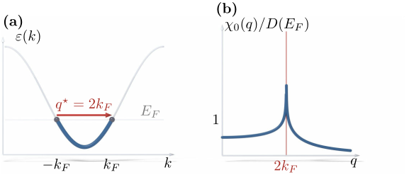

Advanced Quantum Materials 2027 · All lectures · Lecture notes
Session 3. Topological Band Structure Theory
3.2 Linear response theory and how a measurement reads the wavefunctions
How can a measurement tell us something about the wavefunctions of a material? We will now see that the response to a small perturbation is fixed by the states and the energies of the unperturbed system. The result that we need is the first-order formula (3.1), and the rest of the session is built on it.
To see why a bulk band structure can have an invariant at all, we need a tool that connects the wavefunctions of a Hamiltonian to something that we can measure. This tool is linear response theory, and the idea behind it is very general. We perturb the system at a position \(x\) and time \(t\), and then we measure an observable, such as the charge, the current, the magnetization or the heat, at another position \(x'\) and time \(t'\). Linear response theory tells us that this measured response depends only on the electronic structure of the unperturbed material.
Before we specialize to the Hall conductivity, let us look at two examples. Let us put an impurity in a two-dimensional metal and look at how the electron density, or the local density of states, is modulated around it. Linear response theory shows that this modulation pattern, which is called the Friedel oscillation, directly contains the Fermi wavelength of the electron gas, and this is what scanning tunneling microscopy uses in practice.
In a similar way, when we scatter neutrons on a magnetic material, the magnetic moment of the neutron couples to the local moments in the sample. The resulting scattering pattern gives both the magnetic structure and its excitations, in particular magnons, which we build in Section 6.13. It is useful to keep both examples in mind as the general result of the formalism that we build next.

Formally, we start from an unperturbed Hamiltonian \(H_0\) and add a perturbation controlled by a dimensionless parameter \(\lambda\),
\[H(\lambda) = H_0 + \lambda V,\]
so that \(\lambda = 0\) gives the original system and \(\lambda = 1\) is the fully perturbed one. Any observable, such as the energy, the density, the magnetic moment, the current, or the wavefunctions themselves, can then be expanded in a Taylor series in \(\lambda\). The derivative of an observable with respect to \(\lambda\) at \(\lambda = 0\) is what we call the response of the system, and in the case of a magnetic perturbation it is called the susceptibility. Since every observable can be built from the wavefunctions, the most useful object to expand is the ground-state wavefunction itself.
For a state \(|n\rangle\) of the unperturbed Hamiltonian \(H_0\) with energy \(\varepsilon_n\), standard first-order perturbation theory gives
\[|n\rangle_\lambda = |n\rangle + \lambda \sum_{m \neq n} \alpha_m\, |m\rangle + \mathcal{O}(\lambda^2), \qquad \alpha_m = \frac{\langle m|V|n\rangle}{\varepsilon_n - \varepsilon_m}. \tag{3.1}\]
The perturbation mixes every other state \(|m\rangle\) of \(H_0\) into \(|n\rangle\). The amplitude is the matrix element of \(V\) between the two states divided by their energy difference, so a state that is close in energy is mixed in strongly.
The steps From the Schrödinger equation to the first-order state (3.1)
We look for the eigenstate of \(H_0+\lambda V\) that becomes \(|n\rangle\) at \(\lambda=0\). We take the simplest case, where no other state of \(H_0\) has the energy \(\varepsilon_n\). We write the state and its energy as a series in \(\lambda\),
\[|n\rangle_\lambda = |n\rangle + \lambda\,|n^{(1)}\rangle + \mathcal{O}(\lambda^2), \qquad E_n(\lambda) = \varepsilon_n + \lambda\,E^{(1)} + \mathcal{O}(\lambda^2),\]
and we put both into the Schrödinger equation \((H_0+\lambda V)|n\rangle_\lambda = E_n(\lambda)|n\rangle_\lambda\). The terms without \(\lambda\) give \(H_0|n\rangle=\varepsilon_n|n\rangle\), which we already know. The terms with one power of \(\lambda\) give
\[H_0|n^{(1)}\rangle + V|n\rangle = \varepsilon_n|n^{(1)}\rangle + E^{(1)}|n\rangle.\]
The first step is to multiply this equation from the left by \(\langle m|\) with \(m\neq n\). Since \(\langle m|H_0=\varepsilon_m\langle m|\) and \(\langle m|n\rangle=0\), the term with \(E^{(1)}\) drops, and we get
\[\varepsilon_m\langle m|n^{(1)}\rangle + \langle m|V|n\rangle = \varepsilon_n\langle m|n^{(1)}\rangle, \qquad\text{so}\qquad \langle m|n^{(1)}\rangle = \frac{\langle m|V|n\rangle}{\varepsilon_n-\varepsilon_m}.\]
This is the amplitude \(\alpha_m\) of (3.1).
The second step is to multiply the same equation by \(\langle n|\). Now the two terms with \(|n^{(1)}\rangle\) cancel, since \(\langle n|H_0=\varepsilon_n\langle n|\), and what is left is
\[E^{(1)} = \langle n|V|n\rangle,\]
meaning that the energy changes at first order by the expectation value of the perturbation in the unperturbed state.
The last step is the component of \(|n^{(1)}\rangle\) along \(|n\rangle\) itself, which the two projections do not fix. The perturbed state is normalized, and at first order in \(\lambda\) this gives \(\langle n|n^{(1)}\rangle + \langle n^{(1)}|n\rangle = 0\), so \(\langle n|n^{(1)}\rangle\) is purely imaginary. An imaginary component along \(|n\rangle\) is only a change of the phase of the state, so we can set it to zero. Then \(|n^{(1)}\rangle=\sum_{m\neq n}\alpha_m|m\rangle\), which is (3.1).
The denominator also says when the result can be used. The correction is small only if \(\lambda|\langle m|V|n\rangle|\) is much smaller than \(|\varepsilon_n-\varepsilon_m|\) for every \(m\). The problem at the end of this page checks (3.1) against an exact solution for two levels.
Everything that we do in the rest of this session, which is the Hall conductivity, the Berry curvature and the Chern number, comes directly from putting (3.1) into the definition of some observable.
A perturbation \(\lambda V\) mixes the state \(|m\rangle\) into the state \(|n\rangle\). The amplitude to first order is \(\lambda\alpha_m\), with
\[\alpha_m = \frac{\langle m|V|n\rangle}{\varepsilon_n - \varepsilon_m}.\]
Here \(\varepsilon_n\) and \(\varepsilon_m\) are the energies of the two states without the perturbation. The level \(m\) comes closer to the level \(n\), and \(V\) stays fixed. What happens to \(\alpha_m\)?
Show the answers
- A. ✗ False
This is false. Take \(\lambda|\langle m|V|n\rangle|=0.1\). At an energy distance \(1\) the amplitude is \(0.1\), and at a distance \(0.1\) it is \(1\), so it grew by a factor ten.
- B. ✗ False
This is false. The energy difference \(\varepsilon_n-\varepsilon_m\) is in the denominator of \(\alpha_m\). For the same \(V\), a distance ten times smaller gives an amplitude ten times larger.
- C. ✓ True
This is true. The amplitude goes as \(1/(\varepsilon_n-\varepsilon_m)\). With \(\lambda|\langle m|V|n\rangle|=0.1\) it reaches \(1\) at a distance \(0.1\), where the first-order result cannot be trusted. For two levels at this distance the amplitude in the normalized exact ground state is \(0.53\).
Two levels have the energies \(-\Delta\) and \(+\Delta\). A perturbation couples them with the real matrix element \(\lambda v\). To first order, the amplitude of a state \(|m\rangle\) in the perturbed state \(|n\rangle\) is
\[\lambda\alpha_m = \frac{\lambda\langle m|V|n\rangle}{\varepsilon_n - \varepsilon_m},\]
where \(\varepsilon_n\) and \(\varepsilon_m\) are the unperturbed energies. What is the amplitude of the upper level in the ground state?
Show the answers
- A. ✗ False
This is false. The distance between the two levels is \(2\Delta\) and not \(\Delta\). For \(\lambda v=0.2\) and \(\Delta=1\) this option gives \(-0.2\), and the normalized ground state of the exact diagonalization has \(-0.099\).
- B. ✓ True
This is true. The ground state has \(\varepsilon_n=-\Delta\) and the upper level has \(\varepsilon_m=+\Delta\), so the denominator is \(-2\Delta\). For \(\lambda v=0.2\) and \(\Delta=1\) this gives \(-0.1\), and the value in the normalized exact ground state is \(-0.099\).
- C. ✗ False
This is false. This is the probability to find the system in the upper level, which is of second order in \(\lambda\). For \(\lambda v=0.2\) and \(\Delta=1\) it is \(0.01\), while the amplitude is \(-0.1\).
A spin \(1/2\) sits in a magnetic field along \(z\), with the Hamiltonian \(H_0=-B\sigma_z\), where \(B\) is the Zeeman energy. We add a small field along \(x\), which is the perturbation \(\lambda V=\lambda\sigma_x\). Use (3.1) to compute the ground state to first order in \(\lambda\), and from it the response \(d\langle\sigma_x\rangle/d\lambda\) at \(\lambda=0\). Then compare with the exact value of \(\langle\sigma_x\rangle\).
Solution
The ground state of \(H_0\) is \(|\!\uparrow\rangle\) with the energy \(-B\), and the other state is \(|\!\downarrow\rangle\) with the energy \(+B\). The operator \(\sigma_x\) flips the spin, so \(\langle\downarrow\!|\sigma_x|\!\uparrow\rangle=1\), and (3.1) gives
\[\alpha_\downarrow = \frac{1}{(-B)-(+B)} = -\frac{1}{2B}, \qquad |\!\uparrow\rangle_\lambda = |\!\uparrow\rangle - \frac{\lambda}{2B}\,|\!\downarrow\rangle.\]
In the unperturbed state \(\langle\sigma_x\rangle\) is zero. At first order only the two cross terms between \(|\!\uparrow\rangle\) and \(|\!\downarrow\rangle\) contribute, and each of them gives \(-\lambda/2B\), so
\[\langle\sigma_x\rangle = -\frac{\lambda}{B} + \mathcal{O}(\lambda^2), \qquad \frac{d\langle\sigma_x\rangle}{d\lambda}\bigg|_{\lambda=0} = -\frac{1}{B}.\]
For the exact result we note that \(-B\sigma_z+\lambda\sigma_x\) is a spin in a field of size \(\sqrt{B^2+\lambda^2}\). The ground state points along this field, which gives
\[\langle\sigma_x\rangle = -\frac{\lambda}{\sqrt{B^2+\lambda^2}} = -\frac{\lambda}{B}\left(1-\frac{\lambda^2}{2B^2}+\dots\right).\]
The first term is the linear response. The relative error of the linear response is \(\lambda^2/2B^2\) for small \(\lambda\). It is \(0.5\%\) for \(\lambda=0.1B\), and for \(\lambda=0.5B\) the linear response is already \(12\%\) larger in size than the exact value.
The response \(-1/B\) is the transverse susceptibility of the spin. It contains only the matrix element of the perturbation and the splitting \(2B\) of the unperturbed levels, so a measurement of the moment that a small field induces gives this splitting. This is how a response reads the spectrum. A small energy difference gives a large response, and when the splitting goes to zero the linear response diverges and the expansion cannot be used.
- In Section 3.4 we put (3.1) into the Hall conductivity, and in Section 4.3 the same Kubo formula gives the Hall conductance of the Landau levels.
- In Section 9.3 linear response and perturbation theory are derived again in detail, and Section 9.6 computes the Friedel oscillation around an impurity.
- In Section 6.13 we build the magnons that neutron scattering measures.